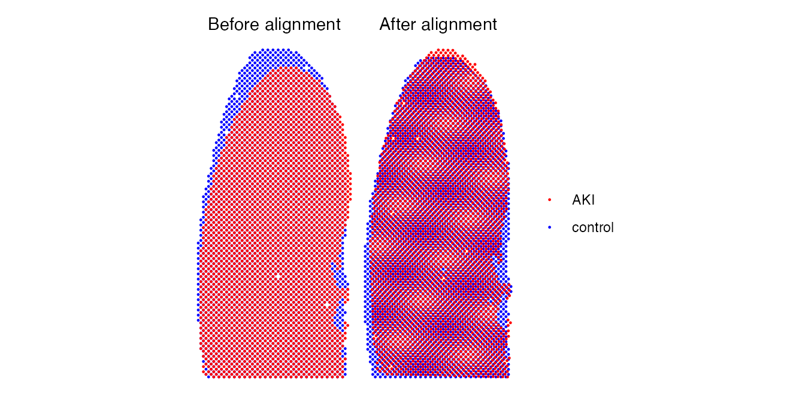
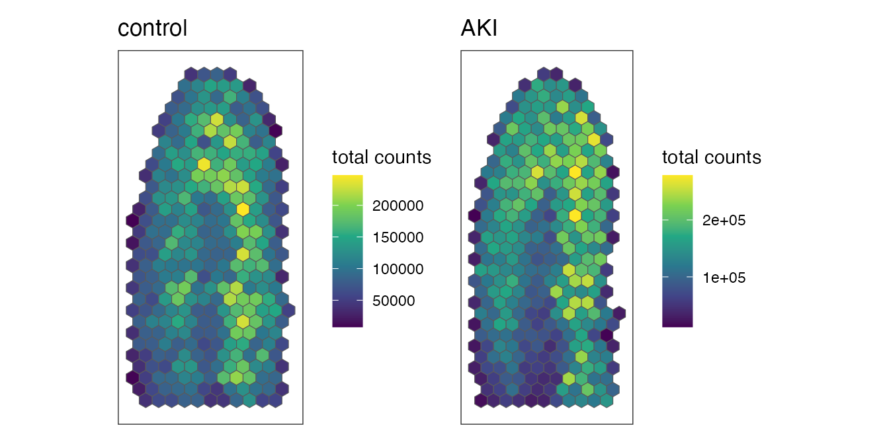
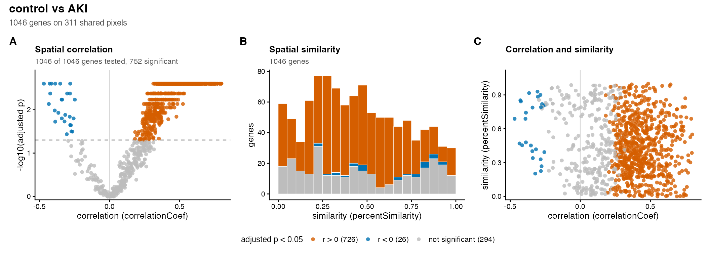
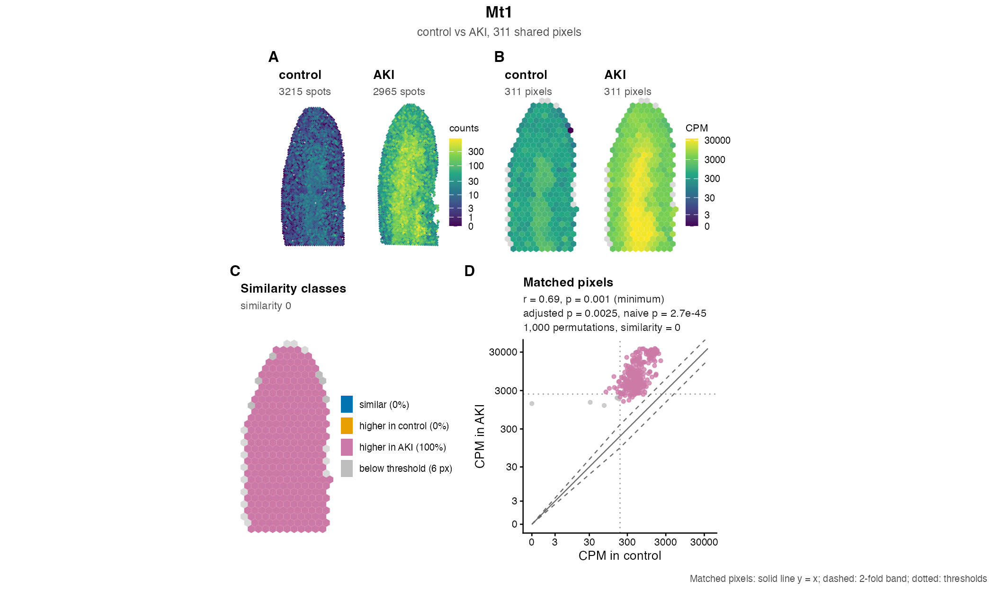
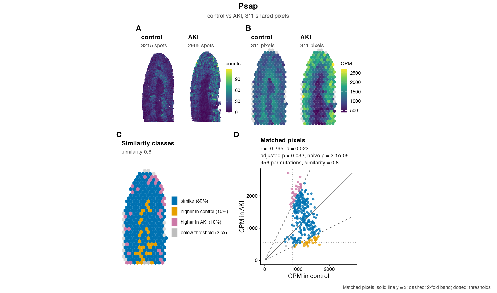

Acute kidney injury (10x Visium)
Kalen Clifton
Vivien Jiang
Jean Fan
Source:vignettes/articles/acute-kidney-injury-10x-visium-rasterized.Rmd
acute-kidney-injury-10x-visium-rasterized.RmdThis case study compares two mouse kidney sections assayed with 10x
Visium: a kidney 24 hours after ischemic acute kidney injury (AKI) and a
kidney after a sham surgery (control). It looks for genes whose spatial
pattern of expression changed with the injury, and reproduces Figures
2f-k of the STcompare
paper with compareSpatial().
The analysis runs live. It downloads 30 MB once (the files are cached for later runs), and takes a minute or two on a computer with 8 cores, of which the comparison of 1046 genes takes about half.
library(STcompare)
library(SpatialExperiment)
library(ggplot2)
library(patchwork)
# use up to 8 threads, leaving one core free
threads <- min(8L, max(1L, parallel::detectCores() - 1L, na.rm = TRUE))Reading the 10x HDF5 files needs the Bioconductor package rhdf5
(BiocManager::install("rhdf5")).
Download the data
The counts, the spot positions and the positions of the AKI section aligned to the control section are on Zenodo (doi:10.5281/zenodo.17676991). The helper below downloads a file once into a cache directory and checks its MD5 checksum, so a broken or partial download is never used.
cacheDir <- file.path(tools::R_user_dir("STcompare", which = "cache"),
"downloads")
downloadCached <- function(url, file, md5) {
dir.create(cacheDir, recursive = TRUE, showWarnings = FALSE)
path <- file.path(cacheDir, file)
if (file.exists(path) && unname(tools::md5sum(path)) == md5) return(path)
old <- options(timeout = max(1800, getOption("timeout")))
on.exit(options(old))
partial <- paste0(path, ".part")
utils::download.file(url, partial, mode = "wb", quiet = TRUE)
if (unname(tools::md5sum(partial)) != md5) {
unlink(partial)
stop("The download of ", file, " is incomplete or has changed ",
"(MD5 mismatch); please try again.", call. = FALSE)
}
file.rename(partial, path)
path
}
zenodo <- "https://zenodo.org/records/19074288/files/"
files <- list(
aki_counts = downloadCached(
paste0(zenodo, "IL3_filtered_feature_bc_matrix.h5?download=1"),
"IL3_filtered_feature_bc_matrix.h5", "a3ea3a2cb4c3e01403d0116ab580c157"),
control_counts = downloadCached(
paste0(zenodo, "NL3_filtered_feature_bc_matrix.h5?download=1"),
"NL3_filtered_feature_bc_matrix.h5", "6793a0f7ceeb082bce383748cfc2805a"),
control_positions = downloadCached(
paste0(zenodo, "NL3_tissue_positions.csv?download=1"),
"NL3_tissue_positions.csv", "24b23088b7a22a53086f9b62b21fed29"),
aki_aligned = downloadCached(
paste0("https://zenodo.org/records/19486091/files/",
"aki_region_onehot_STalign_to_ctrl_region_onehot_affine_only.csv.gz",
"?download=1"),
"aki_region_onehot_STalign_to_ctrl_region_onehot_affine_only.csv.gz",
"adede04898833d385eb52fa2032f2434"))The cache is tools::R_user_dir("STcompare", "cache");
set the environment variable R_USER_CACHE_DIR to move it,
or delete the directory to free the space.
Counts and positions
The counts are 10x HDF5 files, with genes in rows and spots in
columns. Gene symbols are not unique in the 10x feature files (a few
symbols belong to two genes), so make.unique() adds a
suffix to the second one: STcompare needs unique gene names.
read10xH5 <- function(path) {
h5 <- rhdf5::h5read(path, "matrix")
counts <- Matrix::sparseMatrix(i = as.integer(h5$indices),
p = as.integer(h5$indptr),
x = as.numeric(h5$data),
dims = as.integer(h5$shape), index1 = FALSE)
dimnames(counts) <- list(make.unique(as.character(h5$features$name)),
as.character(h5$barcodes))
counts
}
akiCounts <- read10xH5(files$aki_counts)
controlCounts <- read10xH5(files$control_counts)
dim(akiCounts)
#> [1] 32285 2970
dim(controlCounts)
#> [1] 32285 3229The position files list the spots under the tissue, with their row and column on the Visium array. For the AKI section, the file also has its positions after alignment to the control section with STalign: an affine alignment of the two sections’ cortex, outer medulla and inner medulla, computed in Python.
controlPositions <- read.csv(files$control_positions, row.names = 1)
akiAligned <- read.csv(files$aki_aligned, row.names = 1)
head(controlPositions, 3)
#> array_row array_col
#> AAACAAGTATCTCCCA-1 102 50
#> AAACAGAGCGACTCCT-1 94 14
#> AAACAGCTTTCAGAAG-1 9 43
head(akiAligned[, c("x", "y", "aligned_x", "aligned_y")], 3)
#> x y aligned_x aligned_y
#> AAACAAGTATCTCCCA-1 102 50 101.6338727 50.21677
#> AAACAGAGCGACTCCT-1 94 14 92.1707835 15.40202
#> AAACAGCTTTCAGAAG-1 9 43 0.9631011 40.00610
# keep the spots under the tissue
controlCounts <- controlCounts[, rownames(controlPositions)]
akiCounts <- akiCounts[, rownames(akiAligned)]We rotate the sections by 90 degrees so that the kidneys are upright, as in the paper, and compare the positions before and after the alignment:
rotate <- function(x, y) cbind(x = y, y = max(x) - x)
controlXY <- rotate(controlPositions$array_row, controlPositions$array_col)
akiXY <- rotate(akiAligned$x, akiAligned$y)
akiAlignedXY <- rotate(akiAligned$aligned_x, akiAligned$aligned_y)
rownames(controlXY) <- rownames(controlPositions)
rownames(akiXY) <- rownames(akiAlignedXY) <- rownames(akiAligned)
overlay <- function(aki, title) {
ggplot(rbind(data.frame(controlXY, sample = "control"),
data.frame(aki, sample = "AKI")), aes(x, y, colour = sample)) +
geom_point(size = 0.2) +
scale_colour_manual(values = c(control = "blue", AKI = "red")) +
coord_equal() +
labs(title = title, colour = NULL) +
theme_void() +
theme(plot.title = element_text(size = 11, hjust = 0.5))
}
overlay(akiXY, "Before alignment") + overlay(akiAlignedXY, "After alignment") +
plot_layout(guides = "collect")
Rasterize both sections together
A spot of one section has no counterpart at exactly the same position
in the other, so both sections are aggregated onto one grid of hexagonal
pixels with SEraster::rasterizeGeneExpression(), called
once for both, so that a pixel name means the same
location in both. The resolution should be larger than the remaining
misalignment of the two sections and small enough to keep the structures
of interest, such as the thin layers of the medulla. Here a pixel is 5
array units across and holds about 10 spots; fun = "sum"
adds the counts of the spots in a pixel.
control <- SpatialExperiment(assays = list(counts = controlCounts),
spatialCoords = controlXY)
aki <- SpatialExperiment(assays = list(counts = akiCounts),
spatialCoords = akiAlignedXY)
rast <- SEraster::rasterizeGeneExpression(list(control = control, AKI = aki),
assay_name = "counts",
resolution = 5, fun = "sum",
square = FALSE)
rast$control
#> class: SpatialExperiment
#> dim: 32285 323
#> metadata(0):
#> assays(1): pixelval
#> rownames(32285): Xkr4 Gm1992 ... AC234645.1 AC149090.1
#> rowData names(0):
#> colnames(323): pixel35 pixel36 ... pixel424 pixel434
#> colData names(6): num_cell cellID_list ... geometry sample_id
#> reducedDimNames(0):
#> mainExpName: NULL
#> altExpNames(0):
#> spatialCoords names(2) : x y
#> imgData names(0):
summary(rast$control$num_cell)
#> Min. 1st Qu. Median Mean 3rd Qu. Max.
#> 1.000 9.000 11.000 9.954 11.000 13.000The pixels differ in their total counts, so we normalize each pixel to counts per million (CPM). The similarity test compares levels, so it needs a linear scale such as CPM.
cpm <- function(m) Matrix::t(Matrix::t(m) / Matrix::colSums(m)) * 1e6
for (s in names(rast)) {
assay(rast[[s]], "CPM") <- cpm(assay(rast[[s]], "pixelval"))
}
SEraster::plotRaster(rast$control, assay_name = "pixelval",
plotTitle = "control", name = "total counts") +
SEraster::plotRaster(rast$AKI, assay_name = "pixelval",
plotTitle = "AKI", name = "total counts")
Choose the genes
STcompare can test every gene, but genes without a spatial pattern in either section have little to compare. The published analysis tested the genes that are spatially variable in both sections, to find genes whose pattern changed even though they are patterned in both. It identified them with Moran’s I, as implemented in the GitHub package MERINGUE, on the CPM of the pixels:
# Not run: needs remotes::install_github("JEFworks-Lab/MERINGUE")
moransI <- function(spe, filterDist = 10) {
w <- MERINGUE::getSpatialNeighbors(spatialCoords(spe), filterDist = filterDist)
MERINGUE::getSpatialPatterns(assay(spe, "CPM"), w)
}
controlI <- moransI(rast$control)
akiI <- moransI(rast$AKI)
svgGenes <- intersect(rownames(controlI)[controlI$p.adj == 0],
rownames(akiI)[akiI$p.adj == 0])To keep this tutorial free of GitHub-only dependencies, STcompare ships the resulting list: the 1046 genes of the published analysis, spatially variable in both sections (an adjusted p-value of 0 in both; recomputing them with the current MERINGUE gives the same list up to 4 genes at the edge of that criterion).
svgGenes <- scan(system.file("extdata", "vignette-aki-svg-genes.txt",
package = "STcompare"),
what = "", comment.char = "#", quiet = TRUE)
length(svgGenes)
#> [1] 1046
head(svgGenes)
#> [1] "Adhfe1" "Lactb2" "Sbspon" "Rpl7" "Gsta3" "Ptpn18"Without such a selection, most genes of the transcriptome are
detected in few pixels or not at all. compareSpatial() does
not test a gene that is constant in a section, for example never
detected there. It does test the genes detected in a handful of pixels:
its surrogates take each gene’s own values, so their p-values are
calibrated for such genes, and their permutations stop early (see How
STcompare works). Counting the shared pixels in which each gene is
detected in the section where it is detected least shows how many genes
a comparison of the whole transcriptome would test, and how many of them
are sparse (the genes detected in fewer than
= 18 of the 311 shared pixels are those that
surrogate = "gaussian", the surrogates of the legacy
functions, would skip):
shared <- intersect(colnames(rast$control), colnames(rast$AKI))
detected <- sapply(rast, function(r) Matrix::rowSums(assay(r, "pixelval")[, shared] > 0))
table(cut(pmin(detected[, "control"], detected[, "AKI"]), c(-1, 0, 17, Inf),
labels = c("not detected", "1 to 17 pixels", "18 pixels or more")))
#>
#> not detected 1 to 17 pixels 18 pixels or more
#> 14383 4402 13500A gene without a spatial pattern in a section has little to compare, however, which is why the published analysis tested the spatially variable genes.
Run the comparison
compareSpatial() runs the spatial correlation test and
the spatial similarity for every gene, on the pixels shared by the two
sections. The named list rast labels the samples:
control is the first sample (x) and AKI the
second (y).
res <- compareSpatial(rast, assay = "CPM", genes = svgGenes,
nPermutations = 1000, nThreads = threads)
#> compareSpatial: 1046 genes on 311 shared pixels in 36.3 s (736.7k permutations in total, 8 threads)
res
#> STcompareResult: 1046 genes on 311 shared pixels; control vs AKI (assay CPM)
#> Correlation: adaptive permutation p-values (stop at 10 exceedances, at most 1000 permutations); 11 deltas from 0.01 to 0.9; rank-remapped surrogates
#> pValuePermuteAdj < 0.05: 752 genes (726 with correlationCoef > 0, 26 with correlationCoef < 0)
#> stopped early: 387; reached nPermutations: 659; skipped: 0; failed: 0
#> Similarity (|log2(y / x)| <= 1): median percentSimilarity 0.422 (0 genes with NA)
#>
#> gene nPixels correlationCoef pValueNaive pValuePermuteX pValuePermuteY
#> Adhfe1 311 0.0433 4.46e-01 0.846154 0.769231
#> Lactb2 311 0.3083 2.86e-08 0.002997 0.002997
#> Sbspon 311 -0.0216 7.05e-01 0.846154 0.692308
#> Rpl7 311 0.2671 1.76e-06 0.053333 0.073333
#> Gsta3 311 0.4109 4.26e-14 0.000999 0.000999
#> Ptpn18 311 0.3632 3.95e-11 0.001998 0.000999
#> pValuePermute pValuePermuteAdj nPermutations stop deltaStarMedianX
#> 0.833333 0.85041 12 exceedances 0.05
#> 0.002997 0.00584 1000 limit 0.10
#> 0.833333 0.85041 12 exceedances 0.10
#> 0.067114 0.08710 149 exceedances 0.10
#> 0.000999 0.00250 1000 limit 0.30
#> 0.001998 0.00422 1000 limit 0.10
#> deltaStarMedianY deltaGridEdge percentSimilarity percentDissimilarityX
#> 0.20 FALSE 0.0757 0.9243
#> 0.30 FALSE 0.1613 0.8258
#> 0.20 FALSE 0.0957 0.4362
#> 0.05 FALSE 0.7850 0.0000
#> 0.10 FALSE 0.6375 0.0809
#> 0.20 FALSE 0.4339 0.3186
#> percentDissimilarityY numPixelInThresh t1 t2 status message
#> 0.0000 304 82.56 0.00 ok
#> 0.0129 310 32.50 6.24 ok
#> 0.4681 94 0.00 0.00 ok
#> 0.2150 307 571.68 863.35 ok
#> 0.2816 309 6.37 10.98 ok
#> 0.2475 295 0.00 0.00 ok
#> ... and 1040 more rowsAll of them are tested: with the default rank-remapped surrogates,
compareSpatial() skips only genes that are constant in a
section, and none of the spatially variable genes is.
Why nPermutations = 1000? The
permutations of a gene stop early when its p-value is clearly not small
(here 387 of 1046 tested genes, after a median of 76 permutations), so
the run time is dominated by the significant genes, which run to
nPermutations. With 1000, the smallest possible p-value is
1/1001 and this comparison takes 36 seconds on 8 threads. That
resolution is enough here, because many genes are significant: with the
Benjamini-Hochberg adjustment, the
-th
smallest of
p-values needs to be at most
,
which is far above 1/1001 for the hundreds of genes that reach it. The
default, nPermutations = 10000, is safer when few genes are
significant among many, and takes about 7 times longer for these genes;
on these data it finds exactly the same significant genes. See Parameters,
performance and reproducibility.
Interpret the results
plotOverview() draws the overview of a result: the
correlation of every gene against its adjusted permutation p-value (A),
the distribution of the similarity (B), and the correlation against the
similarity (C), with the significant genes coloured by the sign of their
correlation.
plotOverview(res)
The genes along the top of A are those whose p-value reached the
floor of the permutations, 1/1001. We classify the tested genes by the
sign of their correlation (correlationCoef) and their
adjusted permutation p-value (pValuePermuteAdj):
tab <- as.data.frame(res)
tab <- tab[tab$status == "ok", ]
tab$class <- factor(ifelse(tab$pValuePermuteAdj < 0.05,
ifelse(tab$correlationCoef > 0, "positive", "negative"),
"not significant"),
levels = c("positive", "negative", "not significant"))
table(tab$class)
#>
#> positive negative not significant
#> 726 26 294Of the 1046 tested genes that are spatially variable in both sections, 726 have significantly correlated patterns in the control and the AKI section, and 26 significantly anti-correlated patterns. (The published analysis, with the legacy two-stage permutations, found 707 and 24.) Most of these genes keep their pattern after the injury; a small group has the opposite pattern.
Correlation describes the pattern; the similarity describes the levels. Panel C shows that among the significantly correlated genes, positively and negatively correlated genes cover the whole range of similarity: the two tests answer different questions.
Example genes
Two examples illustrate the combinations:
- a significantly positively correlated gene with the lowest similarity: the same pattern at a different level;
- a significantly negatively correlated gene whose pixels are higher in the control about as often as in the AKI section: a different pattern at a similar overall level.
positive <- tab[tab$class == "positive", ]
gene1 <- positive$gene[order(positive$percentSimilarity,
-positive$correlationCoef)][1]
negative <- tab[tab$class == "negative", ]
gene2 <- negative$gene[order(abs(negative$percentDissimilarityX -
negative$percentDissimilarityY))][1]
tab[c(gene1, gene2), c("gene", "correlationCoef", "pValuePermuteAdj",
"percentSimilarity", "percentDissimilarityX",
"percentDissimilarityY")]
#> gene correlationCoef pValuePermuteAdj percentSimilarity
#> Mt1 Mt1 0.6900287 0.002499892 0.000000
#> Psap Psap -0.2654417 0.031947906 0.802589
#> percentDissimilarityX percentDissimilarityY
#> Mt1 0.00000000 1.0000000
#> Psap 0.09708738 0.1003236percentDissimilarityX is the share of pixels more than
two-fold higher in the control (x), and
percentDissimilarityY in the AKI section (y).
plotGene() draws the standard figure of a gene from the
result and the rasterized objects: with native, the spots
of the two sections (control and aki, whose
assay holds the counts; nativeUnit names them) at native
resolution (A, B), then the CPM of the shared pixels (C, D), the
similarity class of every pixel (E) and the CPM at matched pixels with
the gene’s statistics (F). The CPM of Mt1 spans orders of magnitude, so
its maps and scatter axes are drawn on a log scale
(transform = "log1p").
plotGene(res, gene1, rast$control, rast$AKI, native = list(control, aki),
nativeUnit = "spots", transform = "log1p")

Mt1 has the same pattern in both sections (r = 0.69), but in 100% of
the kept pixels it is more than two-fold higher after the injury. Psap
is anti-correlated (r = -0.27) although 80% of its pixels are within
two-fold: its overall level did not change, but where it is highest did.
The pixels more than two-fold higher in the control (10%, orange) and
after the injury (10%, pink) lie in different regions (E).
ggplot2::ggsave() saves either figure, for example
ggsave("gene1.pdf", plotGene(res, gene1, ...), width = 11, height = 6.5);
see Getting
started for the panels and how to customize them.
Session information
sessionInfo()
#> R version 4.6.1 (2026-06-24)
#> Platform: aarch64-apple-darwin23
#> Running under: macOS Sonoma 14.5
#>
#> Matrix products: default
#> BLAS: /Library/Frameworks/R.framework/Versions/4.6/Resources/lib/libRblas.0.dylib
#> LAPACK: /Library/Frameworks/R.framework/Versions/4.6/Resources/lib/libRlapack.dylib; LAPACK version 3.12.1
#>
#> locale:
#> [1] en_US/en_US/en_US/C/en_US/en_US
#>
#> time zone: America/New_York
#> tzcode source: internal
#>
#> attached base packages:
#> [1] stats4 stats graphics grDevices utils datasets methods
#> [8] base
#>
#> other attached packages:
#> [1] patchwork_1.3.2 ggplot2_4.0.3
#> [3] SpatialExperiment_1.22.0 SingleCellExperiment_1.34.0
#> [5] SummarizedExperiment_1.42.0 Biobase_2.72.0
#> [7] GenomicRanges_1.64.0 Seqinfo_1.2.0
#> [9] IRanges_2.46.0 S4Vectors_0.50.3
#> [11] BiocGenerics_0.58.1 generics_0.1.4
#> [13] MatrixGenerics_1.24.0 matrixStats_1.5.0
#> [15] STcompare_2.0.0
#>
#> loaded via a namespace (and not attached):
#> [1] gtable_0.3.6 rjson_0.2.23 xfun_0.62
#> [4] bslib_0.12.0 htmlwidgets_1.6.4 rhdf5_2.56.1
#> [7] lattice_0.23-1 rhdf5filters_1.24.1 vctrs_0.7.3
#> [10] tools_4.6.1 parallel_4.6.1 proxy_0.4-29
#> [13] tibble_3.3.1 pkgconfig_2.0.3 KernSmooth_2.23-27
#> [16] Matrix_1.7-6 rearrr_0.3.5 RColorBrewer_1.1-3
#> [19] S7_0.2.2 desc_1.4.3 lifecycle_1.0.5
#> [22] compiler_4.6.1 farver_2.1.2 textshaping_1.0.5
#> [25] codetools_0.2-20 class_7.3-24 htmltools_0.5.9
#> [28] sass_0.4.10 yaml_2.3.12 pillar_1.11.1
#> [31] pkgdown_2.2.1 jquerylib_0.1.4 classInt_0.4-11
#> [34] BiocParallel_1.46.0 cachem_1.1.0 DelayedArray_0.38.2
#> [37] magick_2.9.1 abind_1.4-8 tidyselect_1.2.1
#> [40] digest_0.6.39 sf_1.1-3 dplyr_1.2.1
#> [43] labeling_0.4.3 fastmap_1.2.0 grid_4.6.1
#> [46] cli_3.6.6 SparseArray_1.12.3 magrittr_2.0.5
#> [49] S4Arrays_1.12.1 e1071_1.7-17 withr_3.0.3
#> [52] scales_1.4.0 rmarkdown_2.32 XVector_0.52.0
#> [55] otel_0.2.0 ragg_1.5.2 evaluate_1.0.5
#> [58] knitr_1.52 viridisLite_0.4.3 SEraster_1.4.0
#> [61] rlang_1.3.0 Rcpp_1.1.2 DBI_1.3.0
#> [64] glue_1.8.1 jsonlite_2.0.0 R6_2.6.1
#> [67] Rhdf5lib_2.0.0 units_1.0-1 systemfonts_1.3.2
#> [70] fs_2.1.0